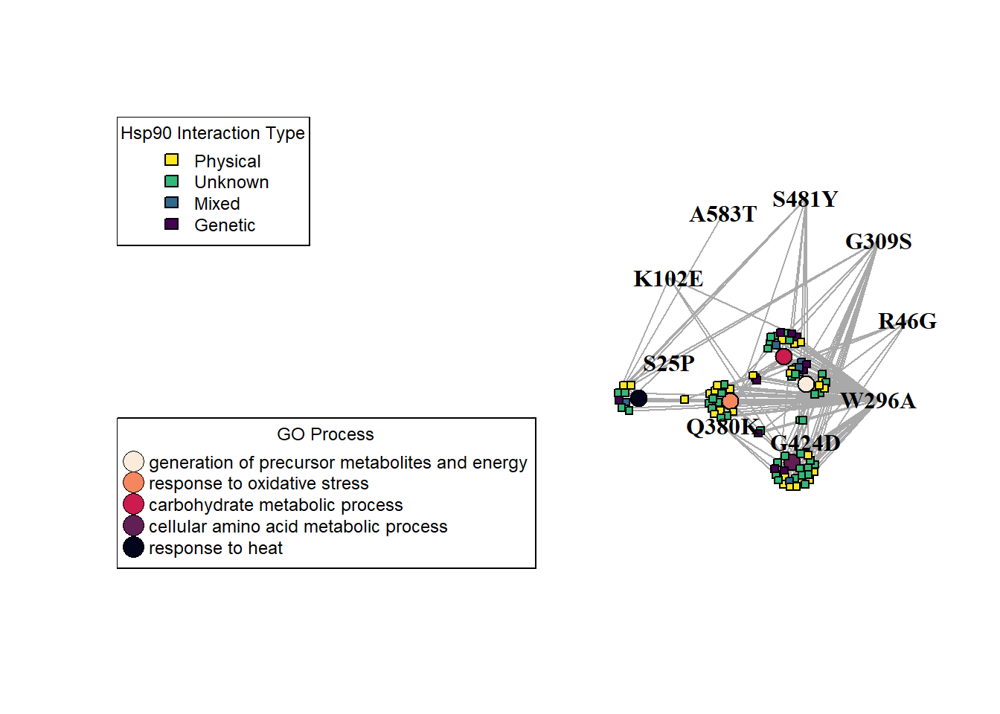
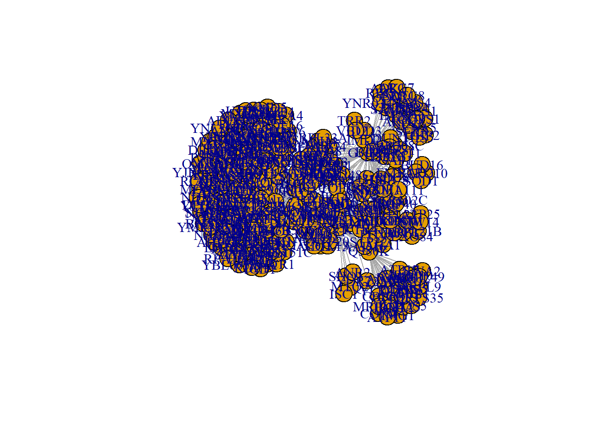

Code
library(igraph)
library(tidyverse)
library(viridis)Mutations in Molecular Chaperone: Hsp90 Elicit Different Proteomic Responses
Erick Rios
May 3, 2023
The focus of my research is the study of Hsp90 molecular chaperone. Over the decades we come to realize this chaperone sits as a major hub of protein-protein interactions (Gopinath et al. 2014; Zhao et al. 2005; Rizzolo and Houry 2019) in which it regulates the folding, activity, and degradation of its clients.
The current study expands the preliminary proteomic analysis previously done in yeast by us(Hohrman et al. 2021), here we use quantitative proteomic analysis to compare extracts from yeast expressing wild-type yeast Hsp90 to nine different mutants. Our results demonstrate that the mutants elicit varied proteomic responses, even though the cells were harvested at temperatures that do not significantly affect growth. Overall, our results suggests:
Data source:
A significant hit in our study is a protein whose abundance had a |Log2 Fold Change| (LogFC) greater than 1.5, relative to wild-type.
Rows: 536
Columns: 7
$ Index <int> 978, 1096, 1948, 2981, 3981, 4064, 4084, 4153, 4177, 590~
$ Systemic.name <chr> "YBR082C", "YBR102C", "YCL047C", "YDL181W", "YDR214W", "~
$ contrast <chr> "A583T", "A583T", "A583T", "A583T", "A583T", "A583T", "A~
$ UniprotID <chr> "P15731", "P38261", "P25576", "P01097", "Q12449", "Q0494~
$ Gene <chr> "UBC4", "EXO84", "POF1", "INH1", "AHA1", "RTN1", "FMN1",~
$ logFC <dbl> 2.800538, 1.707334, -5.045534, -1.636702, -1.893020, -1.~
$ P.Value <dbl> 1.777647e-03, 2.010339e-02, 3.890000e-05, 2.590000e-06, ~| Attribute | Description |
|---|---|
| Index | Old indexing from the original entire data set, artifact from “write.csv” function |
| Systemic.name | Unique identifiers for genes in yeast |
| contrast | Our single point mutations in Hsc82 isoform; This is sometimes referred to as our ‘experimental conditions’ |
| UniprotID | Unique identifiers for genes |
| Gene | Gene symbol; symbols to genes by researchers and voted on by committees |
| logFC | Log Fold Change in protein abundance in mutant sample over wild type sample; Log base 2; negative values signify increase in abundance, positive values is decreased abundance. |
| P.Value | corrected P value using Bonferroni correction |
Rows: 4,990
Columns: 7
$ TYPE <chr> "Genetic", "Genetic", "Genetic", "Genetic", "Gen~
$ HSP90 <chr> "HSC82", "HSC82", "HSC82", "HSC82", "HSC82", "HS~
$ HSP90.Systematic.Name <chr> "YMR186W", "YMR186W", "YMR186W", "YMR186W", "YMR~
$ Gene <chr> "AAH1", "AAR2", "AAR2", "ABD1", "ABD1", "ABD1", ~
$ Systemic.Name <chr> "YNL141W", "YBL074C", "YBL074C", "YBR236C", "YBR~
$ Source <chr> "BioGRID", "BioGRID", "BioGRID", "BioGRID", "Bio~
$ Reference <chr> "Choi J, et al. (2017) PMID:28520786", "Costanzo~| Attribute | Description |
|---|---|
| TYPE | Type of interaction with either Hsc82 or Hsp82 isoforms of Hsp90; either Genetic or Physical |
| HSP90 | Gene symbol for either isoform: Hsc82 or Hsp82 |
| HSP90 Systematic Name | Yeast systematic identifier for isoforms Hsc82 or Hsp82naming convention |
| Gene | Gene symbol for all genes/proteins currently known to have either genetic or physical interaction with either for Hsp90 isoform. |
| Systemic Name | Yeast systematic identifiers for all genes/proteins currently known to have either genetic or physical interaction with either for Hsp90 isoform. |
| Source | Database accessed by SGD to aggregate list |
| Reference | References to studies that provided interaction data |
Hits from our data analyzed by Gene Ontology (GO) Slim Mapper
Rows: 89
Columns: 9
$ GOID <chr> "GO:0042221", "GO:0006520", "GO:0005975", "GO:00~
$ TERM <chr> "response to chemical", "cellular amino acid met~
$ NUM_LIST_ANNOTATIONS <int> 35, 28, 27, 26, 21, 21, 20, 19, 16, 15, 14, 14, ~
$ LIST_SIZE <int> 349, 349, 349, 349, 349, 349, 349, 349, 349, 349~
$ CLUSTER_FREQUENCY <chr> "10.03%", "8.02%", "7.74%", "7.45%", "6.02%", "6~
$ TOTAL_NUM_ANNOTATIONS <int> 454, 155, 148, 163, 282, 106, 80, 127, 167, 271,~
$ POPULATION_SIZE <int> 6485, 6485, 6485, 6485, 6485, 6485, 6485, 6485, ~
$ GENOME_FREQUENCY <chr> "7.00%", "2.39%", "2.28%", "2.51%", "4.35%", "1.~
$ ANNOTATED_GENES <chr> "ADD37, AHP1, CTT1, DAK2, DAL81, ECM38, FRA1, GA~| Attribute | Description |
|---|---|
| Index | Old indexing from the original entire data set, artifact from “write.csv” function |
| Systemic.name | Unique identifiers for genes in yeast |
| contrast | Our single point mutations in Hsc82 isoform; This is sometimes referred to as our ‘experimental conditions’ |
| UniprotID | Unique identifiers for genes |
| Gene | Gene symbol; symbols to genes by researchers and voted on by committees |
| logFC | Log Fold Change in protein abundance in mutant sample over wild type sample; Log base 2; negative values signify increase in abundance, positive values is decreased abundance. |
| P.Value | corrected P value using Bonferroni correction |
### Trim and format the Gene Ontology: Process data
# Calculate GO process enrichment
GO.terms$CLUSTER_FREQUENCY <- as.numeric(sub("%", "", GO.terms$CLUSTER_FREQUENCY))/100
GO.terms$GENOME_FREQUENCY <- as.numeric(sub("%", "", GO.terms$GENOME_FREQUENCY))/100
GO.terms$Enrichment <- GO.terms$CLUSTER_FREQUENCY/GO.terms$GENOME_FREQUENCY
# Take top 5 enriched processes that have at least 5 proteins annotated to a cellular process.
GO.terms5 <- GO.terms[GO.terms$NUM_LIST_ANNOTATIONS >= 5,]
GO.terms5 <- GO.terms5[order(GO.terms5$Enrichment, decreasing = T),]
GO.terms5 <- GO.terms5[1:5, c(1,2,9,10)]
# Format for network
GO.terms5.split <- separate_rows(GO.terms5, ANNOTATED_GENES, sep = ", ")
###
# Make initial network
vertices <- unique(c(GO.terms5.split$TERM, GO.terms5.split$ANNOTATED_GENES))
g <- graph_from_data_frame(GO.terms5.split[,2:3], directed = F, vertices = vertices)
###
# create layout using force directed algorithm
layout <- layout_with_fr(g, weights = GO.terms5.split$Enrichment, coords = matrix(data = 0, nrow = 91, ncol = 2))
###
# Add mutant nodes
mutants <- matrix(c(cos(seq(0, 2*pi, length.out = 10)),
sin(seq(0, 2*pi, length.out = 10))), ncol = 2)*11 # Create coordinates for a ring.
g <- add_vertices(g, 9)
mutant.names <- c("R46G", "G309S", "S481Y", "A583T", "K102E", "S25P", "Q380K", "G424D", "W296A")
V(g)$name[92:100] <- mutant.names
# and edges between mutants and proteins/genes
edgelist <- proteomic[,c(3,5)][proteomic$Gene %in% GO.terms5.split$ANNOTATED_GENES,]
# Convert edge list to indices
edgelist$from <- match(edgelist$contrast, V(g)$name)
edgelist$to <- match(edgelist$Gene, V(g)$name)
# create a list of alternating values from 'from' and 'to' columns
edges <- c(rbind(edgelist$from, edgelist$to))
g <- add_edges(g, edges = edges)
###
# Now add the nodes for proteins that were either not in the top 5 enriched processes or could not be annotated to a GO process at all.
###
# Assign node colors based on physical, genetic, both (mixed), interaction with Hsp90 or neither (unknown)
proteomic$Interaction <- "Unknown"
proteomic$Interaction[proteomic$Systemic.name %in% Hsp90.Interactors$Systemic.Name[Hsp90.Interactors$TYPE=="Genetic"]] <- "Genetic"
proteomic$Interaction[proteomic$Systemic.name %in% Hsp90.Interactors$Systemic.Name[Hsp90.Interactors$TYPE=="Physical"]] <- "Physical"
proteomic$Interaction[proteomic$Systemic.name %in% Hsp90.Interactors$Systemic.Name[Hsp90.Interactors$TYPE=="Physical"] &
proteomic$Systemic.name %in% Hsp90.Interactors$Systemic.Name[Hsp90.Interactors$TYPE=="Genetic"]] <- "Mixed"
# Define color palette for the color blind plebs, just kidding, but not really
colors <- viridis(n = 4, option = "D", alpha = 1, begin = 0, end = 1, direction = -1)
colors.process <- viridis(n = 5, option = "F", alpha = 1, begin = 0, end = 1, direction = -1)
proteomic$Int.color <- colors[match(proteomic$Interaction, unique(proteomic$Interaction))]
V(g)$color <- c(colors.process,
proteomic$Int.color[match(V(g)$name, proteomic$Gene)][6:91],
rep("white", 9)
)
V(g)$color[23] <- "#35B779FF"
###
# Modify node size, shape, and labels to display
term.count <- length(unique(GO.terms5.split$TERM))
node.count <- length(unique(GO.terms5.split$ANNOTATED_GENES))
V(g)$size <- c(rep(12, term.count), rep(5, node.count), rep(0, 9))
V(g)$label <- c(rep("", 91), mutant.names)
V(g)$shape <- c(rep("circle", term.count), rep("square" , node.count), rep("none", 9))
###
plot(g,
layout = rbind(layout, mutants[1:9,1:2]),
margin = -.8, # allow the network to use up more of the margin
vertex.label.cex = 1,
vertex.label.font = 2, # Bold
vertex.label.color= "black",
edge_arrow_mode = 0,
vertex.color = V(g)$color,
xlim=c(-5, 1.75), ylim=c(-2, 2) # Increase the plot size to help accommodate the network
)
legend("topleft", legend=unique(proteomic$Interaction), fill=unique(V(g)$color)[6:91], title = "Hsp90 Interaction Type", cex = .75)
legend("bottomleft", legend= V(g)$name[1:5], title = "GO Process", cex = .75, pch = 21, pt.cex = 2, pt.bg = V(g)$color[1:5], pt.lwd = 0.5)
Here we have 3 classes or groups of nodes:
Node labels were removed for network clarity, with exception of mutant nodes. The GO process terms were moved to a legend and color was used to identify the GO terms in the figure. The focus of the figure was to identify potential processes, not individual proteins, that may be affected by one or more Hsc82 mutant, therefore labels for individual proteins were removed.
Node colors were picked in consideration for color blind individuals using the “Viridis” color package.
In an effort to help reduce cognitive demand, the node shapes and sizes were adjusted to help visually separate the node classes and direct the viewer from the outer layer of the network, towards the center with increasing detail. Node shape for the mutations were removed and labels were left as the main focus of our study revolves around these mutations. The GO terms were designated as circles and size is larger compared to the individual proteins which were designated as squares. Overall, the increase in shape size moving outward from the center gives a sense of hierarchy of importance.
By focusing on the top 5 enriched GO processes, the classic hairball problem is avoided and we can show with visual clarity the cellular processes that would most likely be considered for follow-up experiments or studies.
Genes/proteins annotated to given GO terms by GO Slim mapper had edges drawn between the protein and the corresponding GO term(s). A few proteins, were annotated to more than one cellular process.
Edges were drawn between proteins and Hsc82 mutations if the protein’s abundance was significantly affected by an Hsc82 mutation. Some proteins were affected by more than one mutation and therefore have multiple edges.
An initial network was made consisting of GO terms and proteins, after which the Fruchterman-Reingold force directed algorithm was employed and the GO term enrichments were used as edge weights.
Afterwards, the Hsc82 mutant nodes were manually added around the perimeter of the initial network to avoid mutant nodes from influencing the force directed graph and avoid a network hairball.
plot(g,
layout = rbind(layout, mutants[1:9,1:2]),
margin = -.8, # allow the network to use up more of the margin
vertex.label.cex = 1,
vertex.label.font = 2, # Bold
vertex.label.color= "black",
edge_arrow_mode = 0,
vertex.color = V(g)$color,
xlim=c(-5, 1.75), ylim=c(-2, 2) # Increase the plot size to help accommodate the network
)
legend("topleft", legend=unique(proteomic$Interaction), fill=unique(V(g)$color)[6:91], title = "Hsp90 Interaction Type", cex = .75)
legend("bottomleft", legend= V(g)$name[1:5], title = "GO Process", cex = .75, pch = 21, pt.cex = 2, pt.bg = V(g)$color[1:5], pt.lwd = 0.5)
Preliminary network analysis reveals
---
title: "BCB 520 - The Final Project"
subtitle: "Mutations in Molecular Chaperone: Hsp90 Elicit Different Proteomic Responses"
format:
html:
toc: false
echo: true
author: "Erick Rios"
date: "2023-05-03"
categories: [Portfolio, DataViz, Network, Project, Hsp90, Mutations]
image: "yeastbud.png"
description: "Network visualization and analysis of proteomic responses to Hsp90 mutation."
code-fold: true
code-tools: true
bibliography: references.bib
---
```{r}
#| message: false
#| warning: false
library(igraph)
library(tidyverse)
library(viridis)
```
# The Preamble
The focus of my research is the study of Hsp90 molecular chaperone. Over the decades we come to realize this chaperone sits as a major hub of protein-protein interactions [@Gopinath2014; @Zhao2005a; @Rizzolo2019] in which it regulates the folding, activity, and degradation of its clients.
The current study expands the preliminary proteomic analysis previously done in yeast by us[@Hohrman2021], here we use quantitative proteomic analysis to compare extracts from yeast expressing wild-type yeast Hsp90 to nine different mutants. Our results demonstrate that the mutants elicit varied proteomic responses, even though the cells were harvested at temperatures that do not significantly affect growth. Overall, our results suggests:
- **cellular processes** that may be differentially affected by Hsc82 mutation.
# Data
## Significant hits in our Proteomic Data from DIA-MS
Data source:
1. Main data used in this analysis are the results of Data Independent Acquisition Mass Spectrometry (DIA-MS) experiments, a technique for quantitative proteomics. This is the crux of our study. For brevity, the data has been pre-filtered for significant hits of interest for analysis.
A significant hit in our study is a protein whose abundance had a \|Log~2~ Fold Change\| (LogFC) greater than 1.5, relative to wild-type.
```{r}
# Load in our data
proteomic <- read.csv("trimmed_proteomic_Data.csv")
glimpse(proteomic)
```
### Proteomic Data Dictionary
```{r}
proteomic.dictionary <- read.csv("Proteomic_data_dictionary.csv")
knitr::kable(proteomic.dictionary)
```
## List of Hsp90 Interactions
2. Supporting data/information publicly available on *Saccharomyces Genome Database ([SGD](https://yeastgenome.org/ "Saccharomyces Genome Database main page"))*
- List of currently known protein **physical** interactors of Hsp90 (Both [Hsc82](https://yeastgenome.org/locus/S000004798/interaction "List of Hsc82 genetic and physical interactors") and [Hsp82](https://yeastgenome.org/locus/S000006161/interaction "List of Hsp82 genetic and physical interactors") isoforms)
- List of currently known protein **genetic** interactors of Hsp90 (Both [Hsc82](https://yeastgenome.org/locus/S000004798/interaction "List of Hsc82 genetic and physical interactors") and [Hsp82](https://yeastgenome.org/locus/S000006161/interaction "List of Hsp82 genetic and physical interactors") isoforms)
```{r}
Hsp90.Interactors <- read.csv("SGD_All_interactions_Hsp90_with_Refs_trimmed.csv", header = TRUE, stringsAsFactors = FALSE)
glimpse(Hsp90.Interactors)
```
### Hsp90 Interaction Dictionary
```{r}
Hsp90.Interactors.dictionary <- read.csv("SGD_Hsp90_interactions_dictionary.csv")
knitr::kable(Hsp90.Interactors.dictionary)
```
## GO Slim Mapper results
Hits from our data analyzed by [Gene Ontology (GO) Slim Mapper](https://yeastgenome.org/goSlimMapper "Gene Ontology tool to classify and group genes/proteins")
```{r}
GO.terms <- read.table(file = "GO Slim Mapper Results.txt", header = TRUE, sep = "\t", stringsAsFactors = FALSE)
glimpse(GO.terms)
```
### GO Slim Mapper results Dictionary
```{r}
Go.dictionary <- read.csv("GO_process_results_dictionary.csv")
knitr::kable(proteomic.dictionary)
```
# Visualizations
## Figure 1
```{r}
#| warning: false
### Trim and format the Gene Ontology: Process data
# Calculate GO process enrichment
GO.terms$CLUSTER_FREQUENCY <- as.numeric(sub("%", "", GO.terms$CLUSTER_FREQUENCY))/100
GO.terms$GENOME_FREQUENCY <- as.numeric(sub("%", "", GO.terms$GENOME_FREQUENCY))/100
GO.terms$Enrichment <- GO.terms$CLUSTER_FREQUENCY/GO.terms$GENOME_FREQUENCY
# Take top 5 enriched processes that have at least 5 proteins annotated to a cellular process.
GO.terms5 <- GO.terms[GO.terms$NUM_LIST_ANNOTATIONS >= 5,]
GO.terms5 <- GO.terms5[order(GO.terms5$Enrichment, decreasing = T),]
GO.terms5 <- GO.terms5[1:5, c(1,2,9,10)]
# Format for network
GO.terms5.split <- separate_rows(GO.terms5, ANNOTATED_GENES, sep = ", ")
###
# Make initial network
vertices <- unique(c(GO.terms5.split$TERM, GO.terms5.split$ANNOTATED_GENES))
g <- graph_from_data_frame(GO.terms5.split[,2:3], directed = F, vertices = vertices)
###
# create layout using force directed algorithm
layout <- layout_with_fr(g, weights = GO.terms5.split$Enrichment, coords = matrix(data = 0, nrow = 91, ncol = 2))
###
# Add mutant nodes
mutants <- matrix(c(cos(seq(0, 2*pi, length.out = 10)),
sin(seq(0, 2*pi, length.out = 10))), ncol = 2)*11 # Create coordinates for a ring.
g <- add_vertices(g, 9)
mutant.names <- c("R46G", "G309S", "S481Y", "A583T", "K102E", "S25P", "Q380K", "G424D", "W296A")
V(g)$name[92:100] <- mutant.names
# and edges between mutants and proteins/genes
edgelist <- proteomic[,c(3,5)][proteomic$Gene %in% GO.terms5.split$ANNOTATED_GENES,]
# Convert edge list to indices
edgelist$from <- match(edgelist$contrast, V(g)$name)
edgelist$to <- match(edgelist$Gene, V(g)$name)
# create a list of alternating values from 'from' and 'to' columns
edges <- c(rbind(edgelist$from, edgelist$to))
g <- add_edges(g, edges = edges)
###
# Now add the nodes for proteins that were either not in the top 5 enriched processes or could not be annotated to a GO process at all.
###
# Assign node colors based on physical, genetic, both (mixed), interaction with Hsp90 or neither (unknown)
proteomic$Interaction <- "Unknown"
proteomic$Interaction[proteomic$Systemic.name %in% Hsp90.Interactors$Systemic.Name[Hsp90.Interactors$TYPE=="Genetic"]] <- "Genetic"
proteomic$Interaction[proteomic$Systemic.name %in% Hsp90.Interactors$Systemic.Name[Hsp90.Interactors$TYPE=="Physical"]] <- "Physical"
proteomic$Interaction[proteomic$Systemic.name %in% Hsp90.Interactors$Systemic.Name[Hsp90.Interactors$TYPE=="Physical"] &
proteomic$Systemic.name %in% Hsp90.Interactors$Systemic.Name[Hsp90.Interactors$TYPE=="Genetic"]] <- "Mixed"
# Define color palette for the color blind plebs, just kidding, but not really
colors <- viridis(n = 4, option = "D", alpha = 1, begin = 0, end = 1, direction = -1)
colors.process <- viridis(n = 5, option = "F", alpha = 1, begin = 0, end = 1, direction = -1)
proteomic$Int.color <- colors[match(proteomic$Interaction, unique(proteomic$Interaction))]
V(g)$color <- c(colors.process,
proteomic$Int.color[match(V(g)$name, proteomic$Gene)][6:91],
rep("white", 9)
)
V(g)$color[23] <- "#35B779FF"
###
# Modify node size, shape, and labels to display
term.count <- length(unique(GO.terms5.split$TERM))
node.count <- length(unique(GO.terms5.split$ANNOTATED_GENES))
V(g)$size <- c(rep(12, term.count), rep(5, node.count), rep(0, 9))
V(g)$label <- c(rep("", 91), mutant.names)
V(g)$shape <- c(rep("circle", term.count), rep("square" , node.count), rep("none", 9))
###
plot(g,
layout = rbind(layout, mutants[1:9,1:2]),
margin = -.8, # allow the network to use up more of the margin
vertex.label.cex = 1,
vertex.label.font = 2, # Bold
vertex.label.color= "black",
edge_arrow_mode = 0,
vertex.color = V(g)$color,
xlim=c(-5, 1.75), ylim=c(-2, 2) # Increase the plot size to help accommodate the network
)
legend("topleft", legend=unique(proteomic$Interaction), fill=unique(V(g)$color)[6:91], title = "Hsp90 Interaction Type", cex = .75)
legend("bottomleft", legend= V(g)$name[1:5], title = "GO Process", cex = .75, pch = 21, pt.cex = 2, pt.bg = V(g)$color[1:5], pt.lwd = 0.5)
```
### NODES
Here we have 3 classes or groups of nodes:
1. Our 9 different Hsc82 mutations
2. The top 5 most enriched cellular processes given by Gene Ontology Slim Mapper tool
3. 86 different proteins/genes that were annotated to one or more of the top cellular processes *and* protein abundance was significantly affected in one or more Hsc82 mutants
Node labels were removed for network clarity, with exception of mutant nodes. The GO process terms were moved to a legend and color was used to identify the GO terms in the figure. The focus of the figure was to identify potential processes, not individual proteins, that may be affected by one or more Hsc82 mutant, therefore labels for individual proteins were removed.
Node colors were picked in consideration for color blind individuals using the "Viridis" color package.
In an effort to help reduce cognitive demand, the node shapes and sizes were adjusted to help visually separate the node classes and direct the viewer from the outer layer of the network, towards the center with increasing detail. Node shape for the mutations were removed and labels were left as the main focus of our study revolves around these mutations. The GO terms were designated as circles and size is larger compared to the individual proteins which were designated as squares. Overall, the increase in shape size moving outward from the center gives a sense of hierarchy of importance.
By focusing on the top 5 enriched GO processes, the classic hairball problem is avoided and we can show with visual clarity the cellular processes that would most likely be considered for follow-up experiments or studies.
### EDGES
Genes/proteins annotated to given GO terms by GO Slim mapper had edges drawn between the protein and the corresponding GO term(s). A few proteins, were annotated to more than one cellular process.
Edges were drawn between proteins and Hsc82 mutations if the protein's abundance was significantly affected by an Hsc82 mutation. Some proteins were affected by more than one mutation and therefore have multiple edges.
### LAYOUT
An initial network was made consisting of GO terms and proteins, after which the Fruchterman-Reingold force directed algorithm was employed and the GO term enrichments were used as edge weights.
Afterwards, the Hsc82 mutant nodes were manually added around the perimeter of the initial network to avoid mutant nodes from influencing the force directed graph and avoid a network hairball.
# Conclusions
```{r}
plot(g,
layout = rbind(layout, mutants[1:9,1:2]),
margin = -.8, # allow the network to use up more of the margin
vertex.label.cex = 1,
vertex.label.font = 2, # Bold
vertex.label.color= "black",
edge_arrow_mode = 0,
vertex.color = V(g)$color,
xlim=c(-5, 1.75), ylim=c(-2, 2) # Increase the plot size to help accommodate the network
)
legend("topleft", legend=unique(proteomic$Interaction), fill=unique(V(g)$color)[6:91], title = "Hsp90 Interaction Type", cex = .75)
legend("bottomleft", legend= V(g)$name[1:5], title = "GO Process", cex = .75, pch = 21, pt.cex = 2, pt.bg = V(g)$color[1:5], pt.lwd = 0.5)
```
Preliminary network analysis reveals